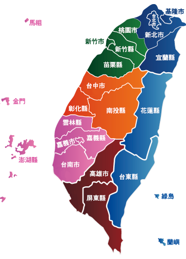

環境部化學物質管理署
小強 你好
審驗資訊系統
帳號功能管理
更換個人密碼
設定自然人憑證
運送車輛審驗/查詢
申請審驗車輛列表
列管車輛資訊查詢
運作業者查詢/統計
公司基本資料查詢
專業人員帳號密碼查詢
小量運送APP密碼查詢
GPS軌跡監控展示
GIS監控圖台(TGOS)
即時監控牆功能
毒性化學物質運送車輛軌跡分類展示
毒性及關注化學物質
運送路線網格分析功能
車輛監控申請
監控車輛名單
軌跡資料回傳情形查詢
週確認作業
車機變頻
多化學物質運送車輛共同軌跡分析功能
車機即時狀態查詢
回報運作場所座標
車輛軌跡介接下載
即時警示分析
管制區域建置
IPS03 管制區域即時警示-今日進入管制區域車輛
IPS04 管制區域即時警示-進入管制區域車輛查詢
IPS05 管制區域即時警示-監控平台1x1
IPS05 管制區域即時警示-監控平台2x2
今日進出高雄市表單統計
高雄市疑似發生事故車輛名單
今日進出科學園區表單列表
每日異常勾稽作業
查核回報平台
查核成果統計報表
簡易表單異常樣態勾稽
客服系統
特殊案件處理申請
表單介接刷新
帳號恢復功能
代碼檔維護
路名維護
主動通知系統
監控系統操作手冊
環保局操作說明會簡報
查核回報操作懶人包
緊急應變即時資訊平台
緊急通報設定
系統帳號權限維護
群組設定
網頁功能對應
APP下載與功能管理
管理端App下載
APP最新消息管理

統計資料：
全國
監控圖台
審驗系統
查核回報